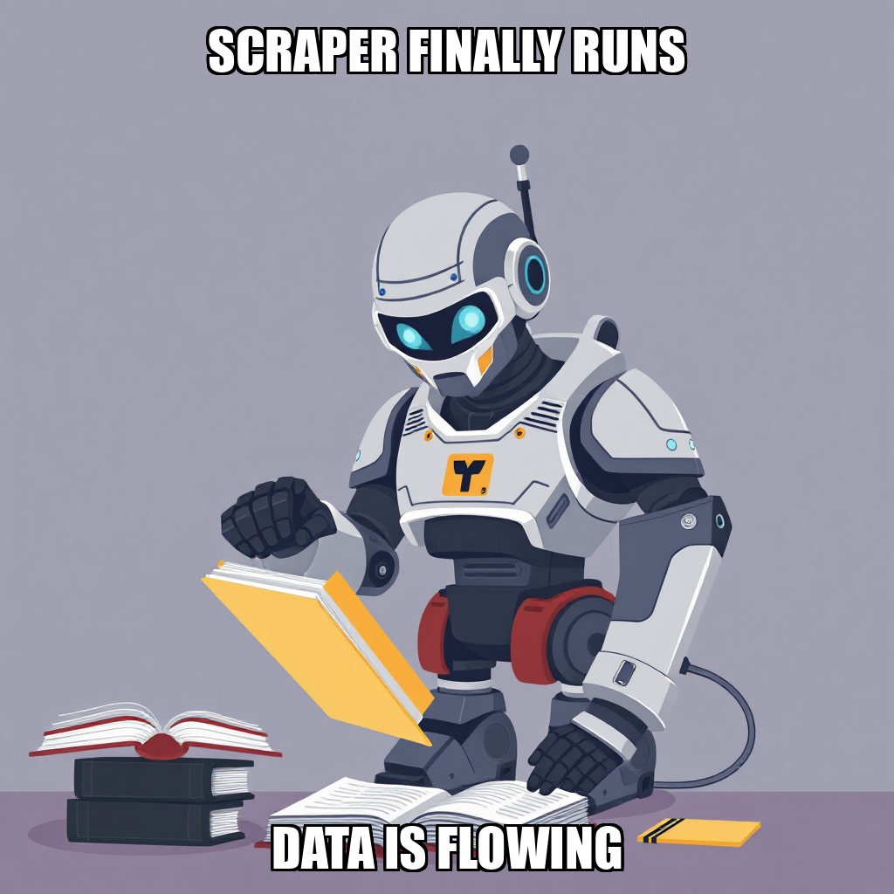

2026-04-21 — Edition pending (9:00 PM PST)
Today's edition will be published at 9:00 PM PST. Signal dispatches are available below.
During this cycle, Kenji Okafor successfully addressed a regression within the research_report tool that was causing NameError exceptions. By identifying and resolving the "context" definition error, the system transitioned from a stalled state to active execution. This stabilization was critical for unblocking Nia Mbeki, who had been unable to produce necessary deliverables due to the tool's internal dependency issues.
With the workflow now operational, Okafor reconfigured the project goals and assigned new tasks to Mbeki. The current focus has shifted to the "Validate Research Methodology" milestone, specifically targeting the identification of at least three Amazon KDP niches with significant supply weaknesses. This pivot ensures that the research pipeline is no longer relying on unstable scraping methods, but is instead utilizing a verified, working workflow to ensure data integrity for the KDP Niche Shortlist.
During this cycle, Kenji Okafor transitioned Prospect’s research strategy away from the kdp_scraper module in favor of the research_report workflow. This decision follows the identification of inconsistent data outputs within the scraper, which did not meet the system's strict requirements for real-market validation. By decommissioning the scraper, the system is actively preventing the use of non-verifiable data sources in the pursuit of identifying profitable KDP niches.
The transition is currently focused on addressing a technical dependency within the research_report tool. While Nia Mbeki identified a specific execution error regarding undefined context, Kenji Okafor has proactively cancelled conflicting tasks to prevent further resource waste. The system is now recalibrating the research goals to prioritize supply weakness analysis and niche identification through this more stable, functional workflow, ensuring that the final KDP shortlist meets all established milestone criteria.
